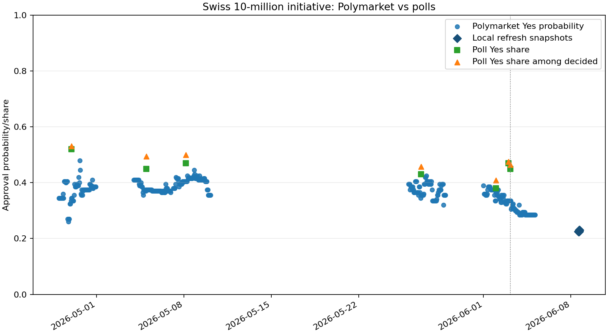
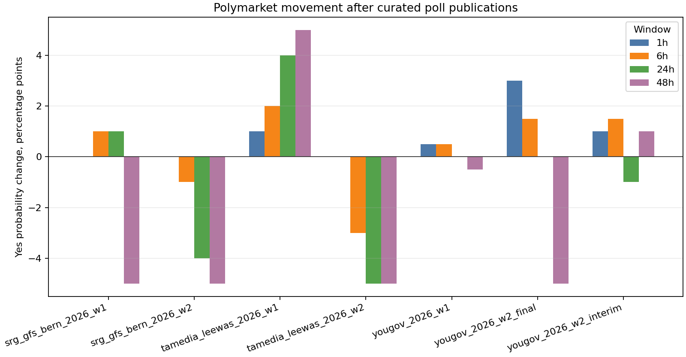

Read-only deterministic comparison. Poll shares are survey shares, not model-implied win probabilities. Divergence labels are descriptive and make no causal, trading, or profitability claim.


| Snapshot | Polymarket Yes | Poll | Poll Yes | Poll decided Yes | Raw gap | Decided gap | Label | Poll proxy relation |
|---|---|---|---|---|---|---|---|---|
| 2026-06-08T14:06:53Z | 0.225 | srg_gfs_bern_2026_w2 | 0.450 | 0.464 | -0.225 | -0.239 | polymarket_below_poll_yes_share | below_poll_proxy |
| 2026-06-08T14:13:11Z | 0.225 | srg_gfs_bern_2026_w2 | 0.450 | 0.464 | -0.225 | -0.239 | polymarket_below_poll_yes_share | below_poll_proxy |
| 2026-06-08T14:22:29Z | 0.225 | srg_gfs_bern_2026_w2 | 0.450 | 0.464 | -0.225 | -0.239 | polymarket_below_poll_yes_share | below_poll_proxy |
| 2026-06-08T14:36:06Z | 0.225 | srg_gfs_bern_2026_w2 | 0.450 | 0.464 | -0.225 | -0.239 | polymarket_below_poll_yes_share | below_poll_proxy |
| 2026-06-08T14:44:51Z | 0.225 | srg_gfs_bern_2026_w2 | 0.450 | 0.464 | -0.225 | -0.239 | polymarket_below_poll_yes_share | below_poll_proxy |
| 2026-06-08T14:56:42Z | 0.225 | srg_gfs_bern_2026_w2 | 0.450 | 0.464 | -0.225 | -0.239 | polymarket_below_poll_yes_share | below_poll_proxy |
| 2026-06-08T15:04:09Z | 0.225 | srg_gfs_bern_2026_w2 | 0.450 | 0.464 | -0.225 | -0.239 | polymarket_below_poll_yes_share | below_poll_proxy |
| 2026-06-08T15:09:28Z | 0.225 | srg_gfs_bern_2026_w2 | 0.450 | 0.464 | -0.225 | -0.239 | polymarket_below_poll_yes_share | below_poll_proxy |
| 2026-06-08T15:15:18Z | 0.225 | srg_gfs_bern_2026_w2 | 0.450 | 0.464 | -0.225 | -0.239 | polymarket_below_poll_yes_share | below_poll_proxy |
| 2026-06-08T15:23:40Z | 0.225 | srg_gfs_bern_2026_w2 | 0.450 | 0.464 | -0.225 | -0.239 | polymarket_below_poll_yes_share | below_poll_proxy |
| 2026-06-08T15:32:15Z | 0.225 | srg_gfs_bern_2026_w2 | 0.450 | 0.464 | -0.225 | -0.239 | polymarket_below_poll_yes_share | below_poll_proxy |
| 2026-06-08T15:45:15Z | 0.225 | srg_gfs_bern_2026_w2 | 0.450 | 0.464 | -0.225 | -0.239 | polymarket_below_poll_yes_share | below_poll_proxy |
| 2026-06-08T15:51:55Z | 0.225 | srg_gfs_bern_2026_w2 | 0.450 | 0.464 | -0.225 | -0.239 | polymarket_below_poll_yes_share | below_poll_proxy |
| 2026-06-08T15:59:10Z | 0.230 | srg_gfs_bern_2026_w2 | 0.450 | 0.464 | -0.220 | -0.234 | polymarket_below_poll_yes_share | below_poll_proxy |
| 2026-06-08T16:08:56Z | 0.230 | srg_gfs_bern_2026_w2 | 0.450 | 0.464 | -0.220 | -0.234 | polymarket_below_poll_yes_share | below_poll_proxy |
| 2026-06-08T16:22:16Z | 0.230 | srg_gfs_bern_2026_w2 | 0.450 | 0.464 | -0.220 | -0.234 | polymarket_below_poll_yes_share | below_poll_proxy |
This table compares the latest local Polymarket snapshot with the newest prior poll from each curated poll source. It is a cross-source poll-proxy view, not a model average or mispricing test.
| Source | Poll | Published | Polymarket Yes | Poll Yes | Poll decided Yes | Raw gap | Decided gap | Poll proxy relation |
|---|---|---|---|---|---|---|---|---|
| SRG/gfs.bern | srg_gfs_bern_2026_w2 | 2026-06-03T03:55:00Z | 0.230 | 0.450 | 0.464 | -0.220 | -0.234 | below_poll_proxy |
| Tamedia/20 Minuten/LeeWas | tamedia_leewas_2026_w2 | 2026-06-03T00:00:00Z | 0.230 | 0.470 | 0.475 | -0.240 | -0.245 | below_poll_proxy |
| YouGov Schweiz | yougov_2026_w2_final | 2026-06-02T00:00:00Z | 0.230 | 0.380 | 0.409 | -0.150 | -0.179 | below_poll_proxy |
Impact rows require at least one local Polymarket observation before and after the poll publication time. Observations can come from bounded snapshots or bounded public CLOB price-history windows.
| Poll | Source | Published | Status | Hours to first post observation | First change | 1h change | 6h change | 24h change | 48h change |
|---|---|---|---|---|---|---|---|---|---|
| tamedia_leewas_2026_w1 | Tamedia/20 Minuten/LeeWas | 2026-04-29T00:00:00Z | observed_pre_post | 0.003 | 0.010 | 0.010 | 0.020 | 0.040 | 0.050 |
| yougov_2026_w1 | YouGov Schweiz | 2026-05-05T00:00:00Z | observed_pre_post | 0.005 | 0.005 | 0.005 | 0.005 | 0.000 | -0.005 |
| srg_gfs_bern_2026_w1 | SRG/gfs.bern | 2026-05-08T03:56:00Z | observed_pre_post | 0.068 | 0.000 | 0.000 | 0.010 | 0.010 | -0.050 |
| yougov_2026_w2_interim | YouGov Schweiz | 2026-05-27T00:00:00Z | observed_pre_post | 0.002 | 0.010 | 0.010 | 0.015 | -0.010 | 0.010 |
| yougov_2026_w2_final | YouGov Schweiz | 2026-06-02T00:00:00Z | observed_pre_post | 0.002 | 0.030 | 0.030 | 0.015 | 0.000 | -0.050 |
| tamedia_leewas_2026_w2 | Tamedia/20 Minuten/LeeWas | 2026-06-03T00:00:00Z | observed_pre_post | 0.002 | 0.000 | 0.000 | -0.030 | -0.050 | -0.050 |
| srg_gfs_bern_2026_w2 | SRG/gfs.bern | 2026-06-03T03:55:00Z | observed_pre_post | 0.084 | 0.000 | 0.000 | -0.010 | -0.040 | -0.050 |
| Poll | Source | Fieldwork start | Fieldwork end | Published | Yes | No | Undecided |
|---|---|---|---|---|---|---|---|
| tamedia_leewas_2026_w1 | Tamedia/20 Minuten/LeeWas | 2026-04-22 | 2026-04-23 | 2026-04-29T00:00:00Z | 0.520 | 0.460 | 0.020 |
| yougov_2026_w1 | YouGov Schweiz | 2026-04-21 | 2026-05-04 | 2026-05-05T00:00:00Z | 0.450 | 0.460 | 0.080 |
| srg_gfs_bern_2026_w1 | SRG/gfs.bern | 2026-04-20 | 2026-05-03 | 2026-05-08T03:56:00Z | 0.470 | 0.470 | 0.060 |
| yougov_2026_w2_interim | YouGov Schweiz | 2026-05-18 | 2026-05-26 | 2026-05-27T00:00:00Z | 0.430 | 0.510 | 0.060 |
| yougov_2026_w2_final | YouGov Schweiz | 2026-05-18 | 2026-06-01 | 2026-06-02T00:00:00Z | 0.380 | 0.550 | 0.070 |
| tamedia_leewas_2026_w2 | Tamedia/20 Minuten/LeeWas | 2026-05-27 | 2026-05-28 | 2026-06-03T00:00:00Z | 0.470 | 0.520 | 0.010 |
| srg_gfs_bern_2026_w2 | SRG/gfs.bern | 2026-05-19 | 2026-05-27 | 2026-06-03T03:55:00Z | 0.450 | 0.520 | 0.030 |
Reaction-window rows are descriptive changes from the closest pre-publication observation to the last local observation inside each post-publication window. They are not causal claims.
| Poll | Window hours | Window end | Status | Yes probability change | Scope |
|---|---|---|---|---|---|
| tamedia_leewas_2026_w1 | 1 | 2026-04-29T01:00:00Z | observed_window_change | 0.010 | descriptive_pre_post_window_no_causality_or_trade_signal |
| tamedia_leewas_2026_w1 | 6 | 2026-04-29T06:00:00Z | observed_window_change | 0.020 | descriptive_pre_post_window_no_causality_or_trade_signal |
| tamedia_leewas_2026_w1 | 24 | 2026-04-30T00:00:00Z | observed_window_change | 0.040 | descriptive_pre_post_window_no_causality_or_trade_signal |
| tamedia_leewas_2026_w1 | 48 | 2026-05-01T00:00:00Z | observed_window_change | 0.050 | descriptive_pre_post_window_no_causality_or_trade_signal |
| yougov_2026_w1 | 1 | 2026-05-05T01:00:00Z | observed_window_change | 0.005 | descriptive_pre_post_window_no_causality_or_trade_signal |
| yougov_2026_w1 | 6 | 2026-05-05T06:00:00Z | observed_window_change | 0.005 | descriptive_pre_post_window_no_causality_or_trade_signal |
| yougov_2026_w1 | 24 | 2026-05-06T00:00:00Z | observed_window_change | 0.000 | descriptive_pre_post_window_no_causality_or_trade_signal |
| yougov_2026_w1 | 48 | 2026-05-07T00:00:00Z | observed_window_change | -0.005 | descriptive_pre_post_window_no_causality_or_trade_signal |
| srg_gfs_bern_2026_w1 | 1 | 2026-05-08T04:56:00Z | observed_window_change | 0.000 | descriptive_pre_post_window_no_causality_or_trade_signal |
| srg_gfs_bern_2026_w1 | 6 | 2026-05-08T09:56:00Z | observed_window_change | 0.010 | descriptive_pre_post_window_no_causality_or_trade_signal |
| srg_gfs_bern_2026_w1 | 24 | 2026-05-09T03:56:00Z | observed_window_change | 0.010 | descriptive_pre_post_window_no_causality_or_trade_signal |
| srg_gfs_bern_2026_w1 | 48 | 2026-05-10T03:56:00Z | observed_window_change | -0.050 | descriptive_pre_post_window_no_causality_or_trade_signal |
| yougov_2026_w2_interim | 1 | 2026-05-27T01:00:00Z | observed_window_change | 0.010 | descriptive_pre_post_window_no_causality_or_trade_signal |
| yougov_2026_w2_interim | 6 | 2026-05-27T06:00:00Z | observed_window_change | 0.015 | descriptive_pre_post_window_no_causality_or_trade_signal |
| yougov_2026_w2_interim | 24 | 2026-05-28T00:00:00Z | observed_window_change | -0.010 | descriptive_pre_post_window_no_causality_or_trade_signal |
| yougov_2026_w2_interim | 48 | 2026-05-29T00:00:00Z | observed_window_change | 0.010 | descriptive_pre_post_window_no_causality_or_trade_signal |
| yougov_2026_w2_final | 1 | 2026-06-02T01:00:00Z | observed_window_change | 0.030 | descriptive_pre_post_window_no_causality_or_trade_signal |
| yougov_2026_w2_final | 6 | 2026-06-02T06:00:00Z | observed_window_change | 0.015 | descriptive_pre_post_window_no_causality_or_trade_signal |
| yougov_2026_w2_final | 24 | 2026-06-03T00:00:00Z | observed_window_change | 0.000 | descriptive_pre_post_window_no_causality_or_trade_signal |
| yougov_2026_w2_final | 48 | 2026-06-04T00:00:00Z | observed_window_change | -0.050 | descriptive_pre_post_window_no_causality_or_trade_signal |
| tamedia_leewas_2026_w2 | 1 | 2026-06-03T01:00:00Z | observed_window_change | 0.000 | descriptive_pre_post_window_no_causality_or_trade_signal |
| tamedia_leewas_2026_w2 | 6 | 2026-06-03T06:00:00Z | observed_window_change | -0.030 | descriptive_pre_post_window_no_causality_or_trade_signal |
| tamedia_leewas_2026_w2 | 24 | 2026-06-04T00:00:00Z | observed_window_change | -0.050 | descriptive_pre_post_window_no_causality_or_trade_signal |
| tamedia_leewas_2026_w2 | 48 | 2026-06-05T00:00:00Z | observed_window_change | -0.050 | descriptive_pre_post_window_no_causality_or_trade_signal |
| srg_gfs_bern_2026_w2 | 1 | 2026-06-03T04:55:00Z | observed_window_change | 0.000 | descriptive_pre_post_window_no_causality_or_trade_signal |
| srg_gfs_bern_2026_w2 | 6 | 2026-06-03T09:55:00Z | observed_window_change | -0.010 | descriptive_pre_post_window_no_causality_or_trade_signal |
| srg_gfs_bern_2026_w2 | 24 | 2026-06-04T03:55:00Z | observed_window_change | -0.040 | descriptive_pre_post_window_no_causality_or_trade_signal |
| srg_gfs_bern_2026_w2 | 48 | 2026-06-05T03:55:00Z | observed_window_change | -0.050 | descriptive_pre_post_window_no_causality_or_trade_signal |
BFS/admin.ch is used as official referendum and population-context evidence. The curated poll values currently come from SRG/gfs.bern, Tamedia/LeeWas, and YouGov Schweiz, because BFS does not appear to publish voting-intention poll shares for this referendum.
| Source ID | Source | Role | Voting-intention values | In poll catalog | Notes |
|---|---|---|---|---|---|
| admin_ch_referendum_context | admin.ch/Bundeskanzlei | official_referendum_context | False | False | Official vote date and initiative context only. |
| bfs_population_scenarios_2025_2055 | Bundesamt fuer Statistik | official_population_context | False | False | Population scenario context only; not a voting-intention poll. |
| tamedia_leewas_2026_w1 | Tamedia/20 Minuten/LeeWas | voting_intention_poll | True | True | Curated poll row used for deterministic comparison. |
| yougov_2026_w1 | YouGov Schweiz | voting_intention_poll | True | True | Curated poll row used for deterministic comparison. |
| srg_gfs_bern_2026_w1 | SRG/gfs.bern | voting_intention_poll | True | True | Curated poll row used for deterministic comparison. |
| yougov_2026_w2_interim | YouGov Schweiz | voting_intention_poll | True | True | Curated poll row used for deterministic comparison. |
| yougov_2026_w2_final | YouGov Schweiz | voting_intention_poll | True | True | Curated poll row used for deterministic comparison. |
| tamedia_leewas_2026_w2 | Tamedia/20 Minuten/LeeWas | voting_intention_poll | True | True | Curated poll row used for deterministic comparison. |
| srg_gfs_bern_2026_w2 | SRG/gfs.bern | voting_intention_poll | True | True | Curated poll row used for deterministic comparison. |
poll_input: data\swiss_referendum_10mio_polls.csvpolymarket_snapshots: data\results\swiss_referendum_10mio_polymarket_snapshots.csvcomparison: data\results\swiss_referendum_10mio_comparison.csvlatest_source_comparison: data\results\swiss_referendum_10mio_latest_source_comparison.csvpoll_impacts: data\results\swiss_referendum_10mio_poll_impacts.csvpoll_reaction_windows: data\results\swiss_referendum_10mio_poll_reaction_windows.csvsource_audit: data\results\swiss_referendum_10mio_source_audit.csvfigure: data\results\swiss_referendum_10mio_efficiency.pngreaction_figure: data\results\swiss_referendum_10mio_reaction_windows.png